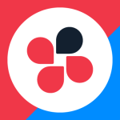

PROFILE
八重樫 亜実
桑沢デザイン研究所卒
Adobe CCソフトを中心に、近年はFigmaを主に利用してデザイン制作に取り組んでいます。
趣味：ローグライクゲーム、麻雀、ソフビ集め、勘料理
好きなもの：鰻、コーラ、お湯、タオルケット
▼Tools
Adobe Illustrator
DTP、ロゴ、バナー、素材などなどなんでも
利用歴/6年
Adobe Photoshop
写真レタッチ、モックアップ作成で主に利用
利用歴/5年

Adobe PremierePro
中高生向け授業映像の編集で利用
利用歴/0.5年
Adobe InDesign
教材制作、社内報制作で利用
利用歴/1年
Adobe XD
案件に合わせてXDを利用することも
利用歴/1年
Procreate
ラフ、イラスト、キャラクター制作で利用
利用歴/4年
Figma
WEBデザインは主にFigma
利用歴/3年
VS Code
コーディングは主にVS Codeを利用
利用歴/2年
▼タスク管理
Atlassian JIRA
Trello
miro
▼チャットツール
